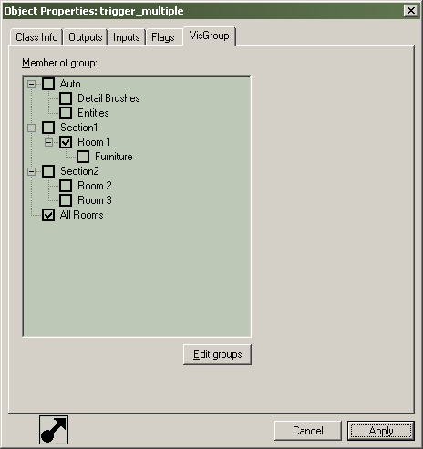

Dialogs: Object Properties
The Object Properties dialog box is the primary method of modifying entity properties. It also allows you to adjust VisGroup properties for one or many brushes. For non-entity objects, only the VisGroup tab will appear in the Object Properties dialog box. Information about individual entities can be found in the Entity Guide.
Class Info Tab
Class
This drop-down list contains all the entities available on the selected object.
Help
Clicking this button will open the help dialog for the selected entity class. The help dialog gives a description of the entity, it's keyvalues, as well as all of its Inputs and Outputs.
Keyvalues
This is a list of the different parameters that can be changed on the entity. Click on an category (or Key) on the left, and the data (value) for that key is displayed in the box to the right. You can change values for the entity by typing in the field.
Angles
The angle control is comprised of two parts - the Angle text box and the angle compass. These two allow you to accomplish the same thing - setting an angle between 0 and 359. The Angle text box also allows you to choose "up" and "down" which correspond to angles -1 and -2.
Browse
Some entity properties - those that require a path/filename of a sprite, sound, or model - will have a Browse button beside their property when you click on them. Clicking on this button will allow you to browse through the appropriate game directory for the sprite, sound, or model. This behavior is controlled by the game data file. For more information on that, see FGD Guide.
Mark
Some entity properties - those that point to another named entity, have a Mark button. When pressed, the selection switches from the current entity to the entity named in the value field.
Mark + Add
Works identical to Mark, except that it adds the marked item to the selection instead of switching the selection to it.
Eyedropper
Clicking this button will turn the mouse cursor into the eyedropper icon. Clicking on any named entity in the 3D view will paste the clicked entity's name into the value field. Note that the entity clicked must have a name, or the eyedropper will have no data to paste.
Copy
This will copy all the keyvalues and parameters from the currently selected entity to the clipboard. This is independent of the standard Copy command.
Paste
This will paste the keyvalues in the clipboard onto the currently selected entities. This is independent of the standard Paste command.
Comments
Allows you to enter comments for the entity. This information is saved with the map. Useful for documenting the purpose of the entity in your map. For example, "This entity triggers the gate to open when the player walks into the room."
SmartEdit
Class Info has two modes, a regular editing mode and SmartEdit (toggled by the SmartEdit button). When you use the SmartEdit mode, all of the entity's keyvalue (entity variable) descriptions are shown to you. This button turns off the "friendly" interface to the keyvalue data and let's you edit keys and values directly, for advanced users.
Outputs Tab
List all of the Outputs for the current entity, and lets you add additional Outputs that the selected entity fires. See Using Outputs and Inputs for more information on working with Outputs.
Inputs Tab
Shows all of the Inputs to the current entity. Double-click an Input to go to the Outputs tab of the entity that originated the Input. See Using Outputs and Inputs for more information on working with Outputs.

Flags Tab
You will find listed here all the available flags for an entity. This section is only available when editing an the properties of entities. A flag allows you to toggle on or off specific features of an entity. If more than one entity is selected, some of the flag checkmarks may appear gray. This signifies that the flag is enabled on only some of the selected entities. More information on flag usage for specific entities can be found in the Entity Guide.
VisGroup Tab
This section allows you to assign the selected object to a VisGroup or remove it from one. To assign the objects to a VisGroup, simply select the VisGroups from the list. All selected objects will be assigned to the VisGroups you select. An object can be in any number of VisGroups. Pressing Edit groups opens the Edit VisGroups dialog. For more information on VisGroups, see Grouping and Visgrouping .

Related Topics
Tie to Entity
Entity Guide for entity specific information
© 2004 Valve Corporation. All rights reserved. Valve, the Valve logo, Half-Life, the Half-Life logo, the Lambda logo, Steam, the Steam logo, Team Fortress, the Team Fortress logo, Opposing Force, Day of Defeat, the Day of Defeat logo, Counter-Strike, the Counter-Strike logo, Source, the Source logo, Hammer and Counter-Strike: Condition Zero are trademarks and/or registered trademarks of Valve Corporation. Microsoft and Visual Studio are trademarks and/or registered trademarks of Microsoft Corporation. All other trademarks are property of their respective owners.